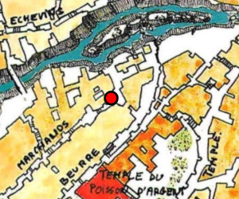
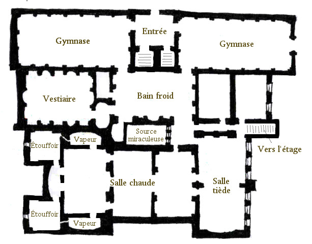
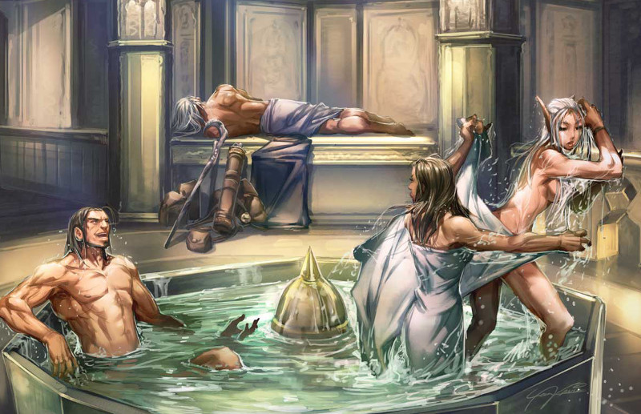

Le palais de l'Eau lustrale
Laelith compte une douzaine de thermes ou bains publics. La ville en possédait bien plus il y a un siècle, véritables lieux de débauche pour une grande partie d'entre eux à cette époque, jusqu'à cette fameuse épidémie de typhus qui fit quelques milliers de morts et força les autorités à fermer la plupart de ces maisons. De nos jours, le plus grand et le plus connu des bains de la cité est le palais de l'Eau lustrale, situé au bout de l'échelle des Quatre marchands, sur la terrasse de la Main qui travaille, près de la faille.
Tous les bains publics de Laelith sont sous la responsabilité du temple du Poisson d'argent. Celui-ci délivre les permis d'exercice, prélève un tiers des bénéfices et effectue des contrôles discrets mais réguliers sur la qualité des établissements. Ces thermes sont un lieu de rencontre très prisé des riches et des oisifs. Marchands, nobles et voyageurs fortunés ne manquent pas d'y faire au moins une visite hebdomadaire. Certains y vont même tous les jours, car en plus des bains on peut manger, boire un verre, se faire masser ou bien encore se faire couper les cheveux et la barbe.
Les bains
L'entrée de cet imposant bâtiment qu'est le palais de l'Eau lustrale est pavé de marbre. Un comptoir invite les visiteurs à s'acquitter du prix de l'entrée en fonction des services qu'ils veulent utiliser. Derrière ce comptoir, un petit escalier mène au sous-sol et un autre, un peu plus large, à l'étage dans les bureaux administratifs.
Le vestiaire. C'est la salle dans laquelle les gens se déshabillent et laissent leurs vêtements et affaires personnelles. Équipé de niches et de casiers, il peut accueillir les effets d'une centaine de personnes. Trois servants, hommes ou femmes selon les jours (voir tarifs ci-dessous), officiellement ici pour aider les visiteurs à se dévêtir, surveillent la pièce pour éviter les vols. De là, les clients ont le choix entre aller au gymnase pour faire du sport et transpirer, ou bien aller directement au bain froid.
Le gymnase. Ces deux grandes salles proposent tout le matériel nécessaire aux clients désireux de faire de l'exercice. On y pratique la lutte, la gymnastique, la boxe (en tapant dans des sacs de blé ou de sable) ou bien encore des jeux de balle, le tout dans une ambiance conviviale.
Le bain froid. Un splendide dôme vitré, qui rappelle ceux du temple du Poisson d'Argent, surplombe un immense bassin circulaire rempli d'eau froide. Les clients peuvent s'y baigner avec des savons confectionnés à base d'huile et de graisse animale ou végétale. Pour des questions d'hygiène, l'eau est constamment renouvelée par un jeu complexe de tuyauteries. Cette pièce n'est pas chauffée et d'un prix tout à fait abordable.
La salle tiède. Après avoir fait de l'exercice au gymnase ou après s'être baigné dans le bain froid, les plus fortunés peuvent continuer dans la salle tiède. Décorée de somptueuses mosaïques, comme la plupart des autres pièces, elle permet de se sécher et de se relaxer tout en se préparant aux pièces suivantes en évitant un changement trop brutal de température. La piscine de cette pièce à ciel ouvert est à température ambiante et peut accueillir de nombreux baigneurs. En fait l'eau ici n'est pas chauffée, mais on y récupère la chaleur des salles chaudes situées à proximité. Le visiteur continue alors son parcours au bain de vapeur ou à l'étouffoir, suivant les goûts personnels de chacun. Un escalier mène aux salons de l'étage.
Le bain de vapeur. Comme leur nom l'indique, ces deux pièces sont humides et surchauffées. La température y atteint les 50 degrés. Les clients s'assoient ou s'allongent sur des bancs en pierre. L'idée est de provoquer une forte transpiration afin de nettoyer la peau en profondeur.
L'étouffoir. Ces pièces ne contiennent aucun bassin, rien qu'un grand fourneau au centre qui maintient une température proche des 70 degrés. Là aussi, l'idée est de provoquer une forte transpiration pour nettoyer la peau. On n'y reste généralement que quelques minutes, assis en cercle sur des gradins.
La salle chaude. Après le bain de vapeur ou l'étouffoir, les clients passent à la salle chaude. Cette grande pièce couverte renferme une petite dizaine de piscines d'eau chaude où la température avoisine les 30 dégrés. Là, des servants raclent la peau des visiteurs avec une sorte de racloir en fer. Le bain complet est alors terminé et les personnes peuvent retourner à la salle tiède pour continuer de se relaxer. Ensuite, s'ils le souhaitent, ils monteront à l'étage pour se faire masser ou parfumer.
La source miraculeuse. Une fontaine d'eau chaude alimente la piscine de cette petite salle dont l'accès se paye comme un extra. On dit que son eau est bénite directement par les dieux et guérit de nombreux maux. Mais les miracles qui s'y produisent ne sont peut-être pas si directement accordés par les dieux car tous les jours, tôt le matin, un prêtre du Poisson d'argent vient ici effectuer une « maintenance » de la piscine. Ceci n'enlève toutefois rien au fait que la magie des dieux y opère.

L'étage
L'étage est séparé en deux fractions qui abritent d'un côté l'administration et de l'autre les salles de massages, le salon de coiffure et un petit restaurant. Pour les massages, le personnel utilise des huiles et des pommades parfumées. Des soins dentaires sont également prodigués à base d'une pâte faite de sel (pour blanchir les dents), de graines de fenouil (pour l'haleine) et de feuilles de prêle (abrasif). Au total, entre les manucures, les masseurs, les coiffeurs, les préposées à l'épilation et les serveurs, on arrive à une moyenne de deux employés par client ! Il y a aussi à l'étage une « salle de relaxation » qui n'est autre qu'un salon confortablement aménagé à côté du restaurant et où l'on se rencontre entre gens du monde. C'est un excellent endroit pour avoir une conversation discrète et beaucoup d'accords s'y sont conclus.
Maison Deuxgros. C'est le nom de ce petit restaurant très coquet situé à l'étage du palais de l'Eau lustrale. Malgré l'embonpoint de l'ensemble des six membres de la famille halfeline qui s'en occupe, ici point de viande ni de poisson : le restaurant est végétarien. Spécialiste des soupes en tout genre, c'est d'ailleurs l'une des tables les plus renommées de la cité sainte.
Le sous-sol
Le fonctionnement du palais de l'Eau lustrale repose sur une remarquable prouesse technologique. Toutes les salles chauffées du rez-de-chaussée sont équipées d'un faux plancher situé un mètre au-dessus du sol. Entre ces deux niveaux circule de l'air chaud, produit par un gigantesque four à bois qui se trouve ici au sous-sol et que des esclaves alimentent toute la journée. Au-dessus du four, d'immenses cuves à eau donnent dans une série de canalisations prodigieusement compliquées. L'eau débouche d'abord dans les salles les plus chaudes puis se refroidit petit à petit avant d'alimenter le bain froid et de revenir dans les cuves. Des conduits aménagés dans les murs permettent de chauffer l'étage également. Les fumées du four sont évacuées par des conduits situées dans l'épaisseur des murs, qui par la même occasion sont chauffés. Le réapprovisionnement en eau est effectué par les esclaves depuis la faille. Le palais de l'Eau lustrale est, dit-on, le plus grand consommateur de bois (pour le chauffage) de la ville.
Tarifs
L'établissement est ouvert tous les jours, du milieu de la matinée au coucher du soleil. Il est réservé aux hommes les jours pairs, aux femmes les jours impairs, et aux prêtres de tous les temples le jour des Dieux. À la moindre entorse à cette règle, le directeur est renvoyé. Les tarifs dépendent des services, et tout doit être payé d'avance à l'entrée, avant le vestiaire.
| Service | Prix |
| Bain froid | 5 pc (30 minutes max) |
| Gymnase | 1 po |
| Salles chaudes | 2 po (durée illimitée) |
| Source miraculeuse | 2 po |
| Massage, soins corporels, coiffeur, etc | 5 pa chaque (30 minutes) |
| Restaurant | 1 po le repas |
Personnalités
Vernan Freccen
Vernan Freccen. 58 ans, marié mais sans enfant, c'est l'actuel directeur de l'établissement. Cet homme aimable à la barbe grise est soumis à une double pression, de la part du temple du Poisson d'argent qui exige un service de première classe et de la part des propriétaires, quatre riches marchands, qui exigent un maximum de revenus. Il est surmené car il veut tout surveiller personnellement. Ses subordonnés se demandent d'ailleurs bien combien de temps il pourra encore tenir à ce rythme sans s'effondrer.
Grender et Joend. Ce couple d'humain d'une quarantaine d'années sont les préposés à l'entrée. En fait, Grender était il y a une dizaine d'année le responsable des thermes, mais il a été évincé par les propriétaires car les recettes n'étaient pas suffisantes. Les prêtres, par charité, sont toutefois intervenus pour lui permettre de rester travailler ici. Cela met également une grosse pression sur Vernan qui, chaque fois qu'il passe à l'entrée, ne peut oublier ce qui l'attend s'il ne comble pas les attentes. Joend passe son temps à houspiller son mari.
Berpad Cerdian
Berpad Cerdian. Chef comptable, souriant et bien élevé, c'est toutefois un jeune homme rude qui ne résonne qu'en termes de profits. Toute la journée il traque la moindre possibilité de réaliser des économies ou de vendre un service un peu plus cher, et il n'hésite pas à renvoyer les employés qu'il juge n'être pas assez rentables. Cela provoque une forte rotation de personnel dans l'établissement, qui n'est pas du goût de Vernan, mais force est de constater qu'avec Berpad les résultats sont là et les propriétaires sont contents. Si le directeur est craint mais respecté, Berpad est franchement détesté. Il espère remplacer Grender sous peu, une perspective qui terrorise ce dernier. Le jeune homme vit avec son « compagnon » dans une maison sur la terrasse du Nuage.
Merrana Nerven. C'est la responsable de l'étage, en charge des soins corporels et des massages. Jolie et élégante, cette ex-tenancière de bordel proche de la quarantaine réalise le recrutement, supervise la qualité des services offerts et la bonne conduite des employées, qui l'aiment bien. Elle n'hésite pas à s'occuper personnellement des hôtes les plus fortunés et, accessoirement, elle renseigne aussi le temple du Poisson d'argent sur le fonctionnement de l'établissement. Tout le monde le sait mais s'en moque en fait.
Anterdj Kordath. Chef chauffeur. Il règne sur le sous-sol et une quinzaine d'esclaves. Grand et maigre, il a perpétuellement l'air ailleurs. Ce n'est d'ailleurs pas qu'une impression, car l'homme est accro aux drogues, qu'il se procure à la taverne du Chat Pourri, rue des Abattoirs sur la Chaussée du lac. Il passe des journées entières à rêvasser devant le grand four, une attitude que Cerdian n'apprécie pas du tout.

Basé sur le HS Laelith de Casus Belli, complété par blueace